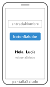

App Lab: textos y datos
🤔 Pienso5 min
Qué hago aquí: Piensa un momento y contesta con lo que ya sabes. No pasa nada si no lo sabes: es para empezar.
Escribe tres datos que hayas escrito alguna vez en una app (tu nombre, una búsqueda…).
📖 Leo y aprendo15 min
Qué hago aquí: Lee despacio, mira los dibujos y los ejemplos, y quédate con la idea clave del final.
Para pedir datos, App Lab tiene el cuadro de texto (text input). Para mostrar resultados, la etiqueta (label). Dos bloques los unen:
-
getText(id): lee lo que hay escrito en un elemento. -
setText(id, texto): escribe un texto en un elemento.

getText lee lo que escribe el usuario. setText escribe un resultado en la pantalla.✏️ Hago25 min
Qué hago aquí: Haz las actividades en orden. Empieza siempre por las básicas.
Haz la app que saluda. Pruébala con tu nombre. Marca cuando funcione:
Une cada bloque con lo que hace.
getText • | • Cambia de pantalla |
setText • | • Lee un texto |
setScreen • | • Escribe un texto |
Haz un contador: una variable clics empieza en 0. Cada vez que pulsas un botón, suma 1 y lo escribe en una etiqueta.
Haz una calculadora de dos números que diga la suma. Usa getNumber.
✏️ Puedes responder escribiendo, con un dibujo o un esquema, o contándolo en voz alta.
🚀 Amplío (si quieres saber más)
Qué hago aquí: ¿Has terminado? Lee la curiosidad o elige el reto. Es voluntario.
Haz una app de preguntas: pide la respuesta en un cuadro de texto. Si es correcta (if), suma un punto y escribe «¡Bien!»; si no, «Inténtalo otra vez».
✅ Compruebo5 min
Qué hago aquí: Contesta sin mirar la ficha y marca cómo lo llevas.